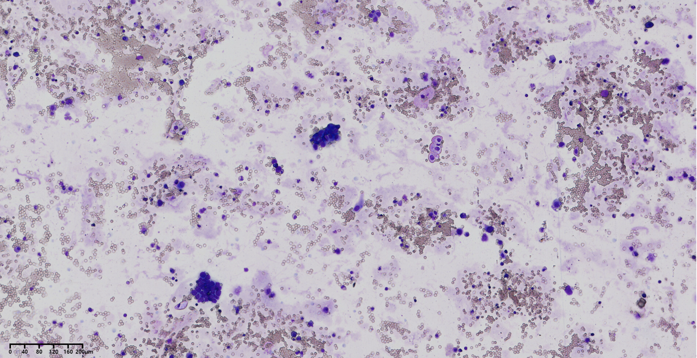

Liquid biopsy and single-cell diagnostics
Definitive malignancy diagnosis of liquid biopsy via low-cost single-cell genomic sequencing
We apply low-cost single-cell whole genome sequencing (scWGS) to accurately determine the malignancy of rare tumor cells in blood and non-blood body fluids, enabling definitive malignancy diagnosis with ~100% specificity and PPV.
Cytology AI for rapid malignancy diagnosis & tumor-origin identification via single-cell genomic annotation
We have developed a single-cell-resolved cytology AI framework that enables rapid malignancy diagnosis and tumor-origin identification. The framework is trained on an accurate, unbiased tumor cell dataset confirmed by single-cell whole-genome sequencing (scWGS) from liquid biopsy samples.
High-throughput single-cell RNA-seq for CTC detection & tumor-origin identification
DTCFinder is a bench-to-bits, label-free method integrating scRNA-seq and machine learning, enabling unbiased detection, in-depth molecular characterization, and precise tissue-of-origin tracing of CTCs across various types of liquid biopsies.